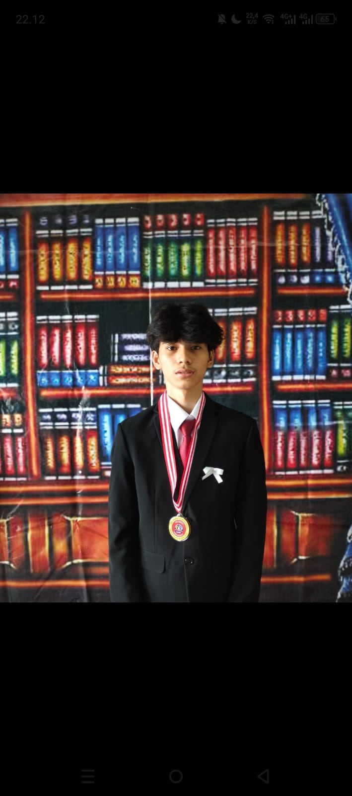

Web Development
Membuat tampilan dan fungsi website yang ringan, cepat, dan mudah digunakan.
Saya seorang
Saya membuat website yang rapi, cepat, dan mudah dipakai.

Saya mahasiswa Teknik Informatika yang tertarik pada pengembangan web, desain antarmuka, dan solusi digital yang bermanfaat.
Menurut saya, teknologi yang baik bukan hanya terlihat modern, tetapi juga menyampaikan pesan dengan jelas, menyederhanakan proses, dan membuat pengguna nyaman.
Persentase menunjukkan tingkat penguasaan saya saat ini.
Membuat tampilan dan fungsi website yang ringan, cepat, dan mudah digunakan.
Merancang pengalaman pengguna yang nyaman, rapi, dan sesuai kebutuhan.
Menyusun ide digital tepat guna untuk menjawab kebutuhan nyata.
Beberapa bidang yang saya kerjakan dan kembangkan.
Website informatif dengan tampilan responsif dan navigasi yang mudah digunakan.
Eksplorasi antarmuka dashboard yang menyajikan informasi dengan jelas.
Konsep antarmuka aplikasi dengan alur penggunaan yang sederhana.
Punya ide atau ingin berdiskusi tentang proyek website? Kirim pesan melalui formulir ini.